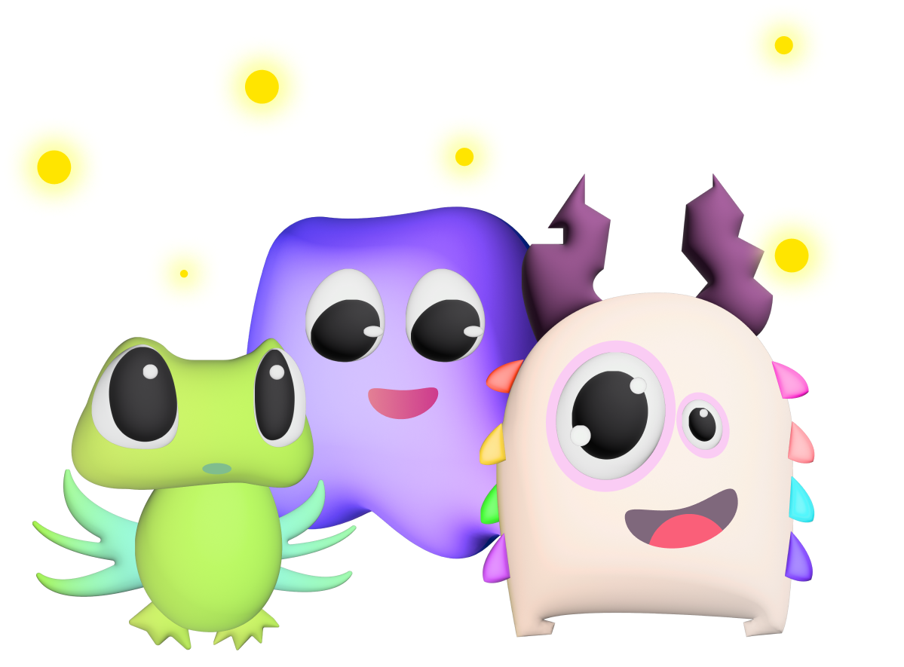

UX/UI
DailyGo
Langara College Project
Project Overview
DailyGo is part of the Fitness/HealthTech industry. The app strives to address the pain point of motivation and engagement in our everyday walking routine. Many individuals struggle to maintain a consistent walking habit and often get bored or lose motivation. This app aims to address these challenges by providing an interactive and gamified walking experience, incorporating elements of collaboration and handling our inner monsters.
Problem Statement
How to keep people engaged in having an active lifestyle by simply going for a walk?
Summary
Problem
- Research
- Challenge
- Competitor Analysis
Ideation
- User Flow
- Gamification and Narrative
- Wireframes
- UI Kit
- Branding and Mockups
Takeaways
- What I Learned
- Working As a Team
- What I'd do differently
Desk Research
According to the World Health Organization (WHO), physical inactivity ranks as the fourth leading global risk for mortality, following smoking, high blood pressure, and high BMI. Surprisingly, 1.4 billion adults (representing 27.5% of the world's adult population) remain inactive, with minimal progress seen since 2001. The concerning aspect is the notable discrepancies in physical activity levels that persist among different regions, countries, age groups, and genders.
Competitor Analysis

All of these apps are related to solving the same problem as DailyGo tries to solve, except for offering a streak system and focusing on inner monsters' narrative. Also, Pokémon GO and Walkr can be considered games, where the user (or gamer) must accomplish other goals, not only walking. DailyGo is about focusing on changing walking habits, and step by step helping the user to have a more active lifestyle.
Narrative and Gamification
Monsters and Fireflies

Everybody has a darker side and issues that work against goals. Some people call these issues “inner monsters”, and it’s often that they’re hard to handle as they are part of us and never disappear totally. The idea of the monsters in DailyGo is that they will be there, no matter what, but instead of defeating them, users will cheer them up, and step-by-step they will be able to change their habits. As the opposite of darkness, there’s light, and the firefly was the first thing that came to my mind when I thought about a way of overcoming my own darkness. I shared it with my teammates, and they instantly liked the idea. Finally, DailyGo gained a concept, a narrative, but how we could engage the user to use the app, and how the app could help them work on their walking habits? That’s when the gamification came in.
Streak System, Badges and Group Challenges
The moment the team and I thought about collecting fireflies to interact with monsters, things started to become more complex. The game design classes taught by instructor Derek Tam helped us to think about game concepts and the logic behind users’ access and engagement to DailyGo. The app currency is the fireflies, and it will be exchanged for special badges. Therefore, the streak system should be the way that the user can collect more fireflies, and also keep the streak by collecting hearts – a way to skip those days when we’re not feeling great for achieving goals, and then we just skip things. Our main references were the apps Duolingo and Gentle Streak. There’s also a section in the app where the user can understand more about the streak system:
Wireframes
All of these apps are related to solving the same problem as DailyGo tries to solve, except for offering a streak system and focusing on inner monsters' narrative. Also, Pokémon GO and Walkr can be considered games, where the user (or gamer) must accomplish other goals, not only walking. DailyGo is about focusing on changing walking habits, and step by step helping the user to have a more active lifestyle.